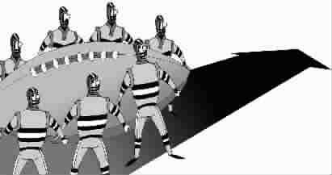

《论语》与橄榄球
●薛 涌
这学期，我开始给美国学生讲《论语》了。第一课从“学而”讲起，第二段就讲到了有子那段著名的话：“其为人也孝弟，而好犯上者，鲜矣；不好犯上，而好作乱者，未之有也。”大意是说：做人孝敬父母，尊重兄长，就很少会冒犯上面的权威。不冒犯上面的权威的人，则从来没有叛乱的。
给美国人讲这一套，开始并非没有顾虑。这是典型的君君臣臣父父子子那一套，美国人天性喜欢自由，喜欢挑战权威，怎么受得了这样的说教？不料，我命一个学生读英译，该学生读完，不住地点头称是。我问他是否同意有子的话，他回答：“当然，这是做人最基本的规矩。”
我马上问：“这一套教导和你们美国人的自由主义如何协调？”他回答：“自由当然重要，但是首先还得有规矩，有纪律，否则社会无法正常运转。有子的话，和学校里橄榄球队的规矩就特别像。”
这一下子把我的兴头调动了起来，《论语》课一下子变成了橄榄球课。美国的三大球中，棒球我不懂，对橄榄球和篮球却很喜欢。不过，这两种球，虽然都是集体项目，风格和文化却大异。篮球体现了城市贫民窟的孩子自由奔放的个性，橄榄球则体现严格的组织纪律性，全队有明确的统帅，步调一致，有如希腊的方阵，一般在郊外的学校里更流行。我这位学生说，有子所谓的孝弟，一是尊重父母，一是尊重兄长。这就好比在高中的橄榄球队中首先要尊重教练，其次要尊重高年级的前辈一样。一年级的学生也许球艺甚高，但是许多事情要服从四年级的老大哥。因为打橄榄球，上场人数多，讲究队形，离开了集体，再大的本事也难施展。而这种全队必须像一个人一样的集体精神，光有技术是不够的，需要前辈传授。
讲到这里，这个学生还特别提到美国的国家男篮，以之作为一个反面的典型。他说那些目空一切的球星，每个人都觉得自己是大爷，都要耍自己的威风。到了赛场上，永远是自我第一，球队第二。结果碰上组织严密的欧洲军团，就像个二流队。这一套，在橄榄球队里行不通。
当然，在美国的职业橄榄球队中，并非没有目空一切的人。有些年轻队员，因为自己球艺出众，就很张狂，说话没大没小。这种队员，只要不影响队里的集体战术，还是能被宽容的。但是，在球迷中则口碑甚坏。人们谈起这样的人，虽然承认他是个好队员，却并不尊重他，他的“粉丝”也不多。
我那个学生最后总结说：“橄榄球队就是美国社会的一个缩影。我爸爸是个公司的创建者和总裁，他创建这个公司时，就那么几个人，大家完全是团队运作，有时简直就是有集体无个人。你要是总想着我怎么样，就没有人和你合作了。如今干大了，当年创建公司的那帮人作为个人就浮现出来了：他们是元老，他们是父亲一样的人物，有特权挣得多，别人也就得听他们的。有子那套规矩，在公司里也得讲。大家守这规矩，企业才能发展。美国是讲个人，但是，没有集体，哪里有个人？”
这也是我反复强调的，中国人对美国文化的一个最大误解，就是觉得他们只讲个人。其实，从上学的第一天，孩子就会接受与别人合作、尊重别人的训练。而体育是培养他们这种团队精神的最好方式。
(周杰摘自《杂文选刊》2006年11月上，黎青图)